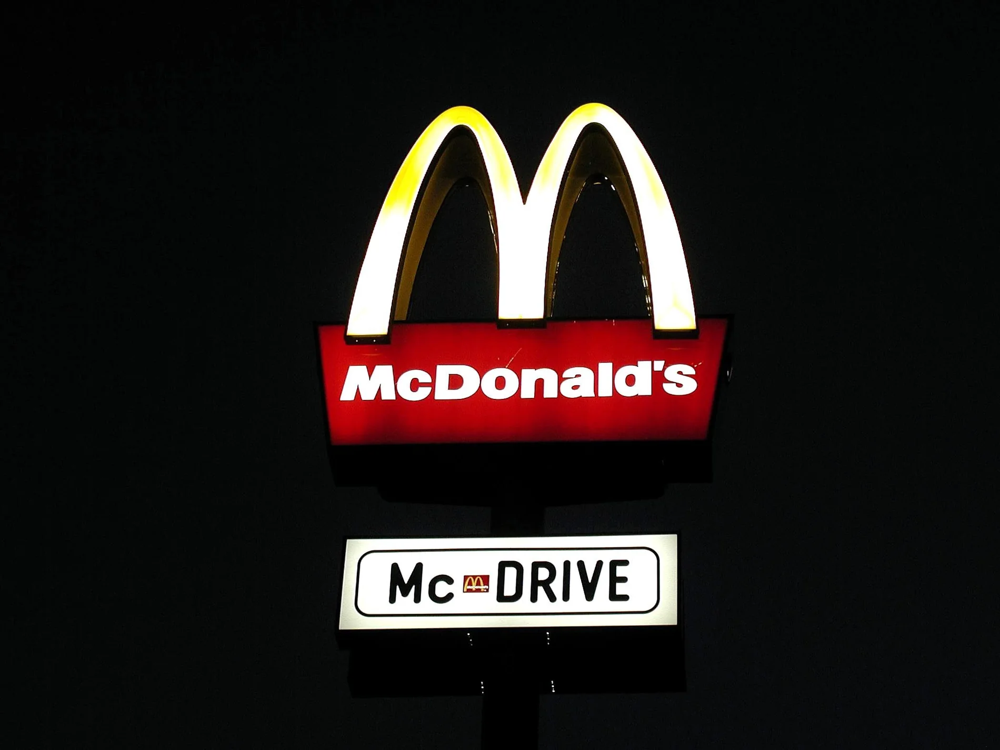

3. Ser distintivo antes que obsesionarse con ser diferente
Existe una diferencia importante entre diferenciación y distintividad.
Diferenciación significa que las personas consideran que una marca ofrece algo sustancialmente diferente de sus alternativas.
Distintividad significa que pueden identificarla fácilmente.
Un estudio de Jenni Romaniuk, Byron Sharp y Andrew Ehrenberg examinó marcas en diferentes categorías y encontró niveles relativamente bajos de diferenciación percibida incluso entre marcas exitosas. Los autores cuestionaron por ello la idea de que la diferenciación percibida sea siempre el elemento central de la estrategia y propusieron dar mayor importancia a la distintividad.
Aplicado al PASE
El rebranding no necesita demostrar desesperadamente que el PASE es “completamente diferente” de cualquier otra unidad de la universidad.
Necesita conseguir que:
El PASE parezca el PASE.
Su identidad debería evitar convertirse en otra combinación genérica de fotografías de estudiantes, colores institucionales, íconos universitarios y textos intercambiables.
Ejemplo
Los arcos dorados de McDonald's no explican que sus hamburguesas sean superiores.

Su enorme valor consiste, en primer lugar, en que dicen inmediatamente:
McDonald's.
Criterio operativo
Preguntar:
Si ocultáramos el logotipo, ¿seguiría existiendo algo en esta pieza que ayude a reconocer al PASE?
Si la respuesta habitual es no, la identidad depende demasiado del logotipo.
Referencias
- Romaniuk, J., Sharp, B., & Ehrenberg, A. (2007). Evidence concerning the importance of perceived brand differentiation. Australasian Marketing Journal, 15(2), 42–54. https://doi.org/10.1016/S1441-3582(07)70042-3